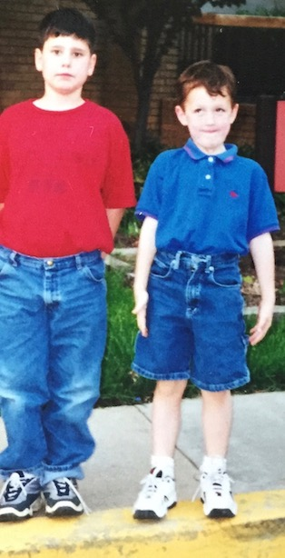
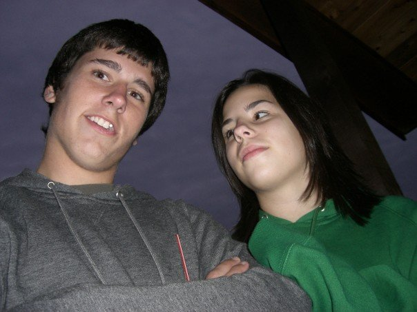
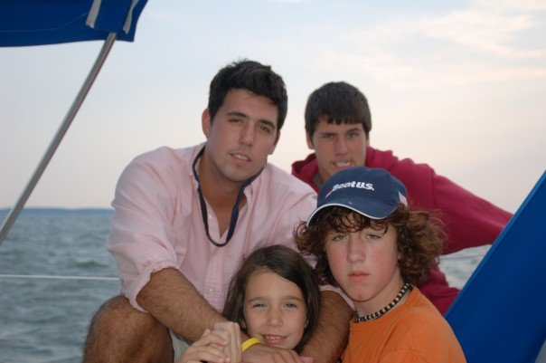
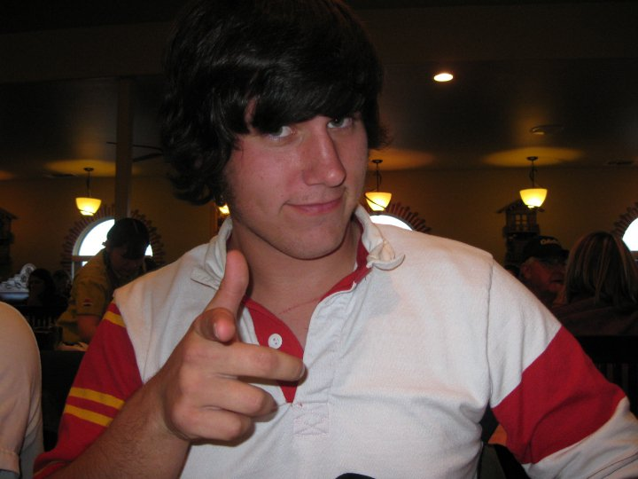
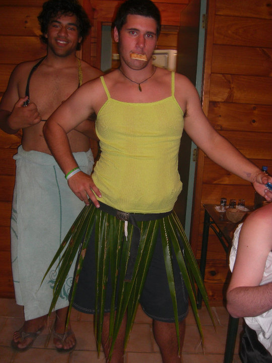
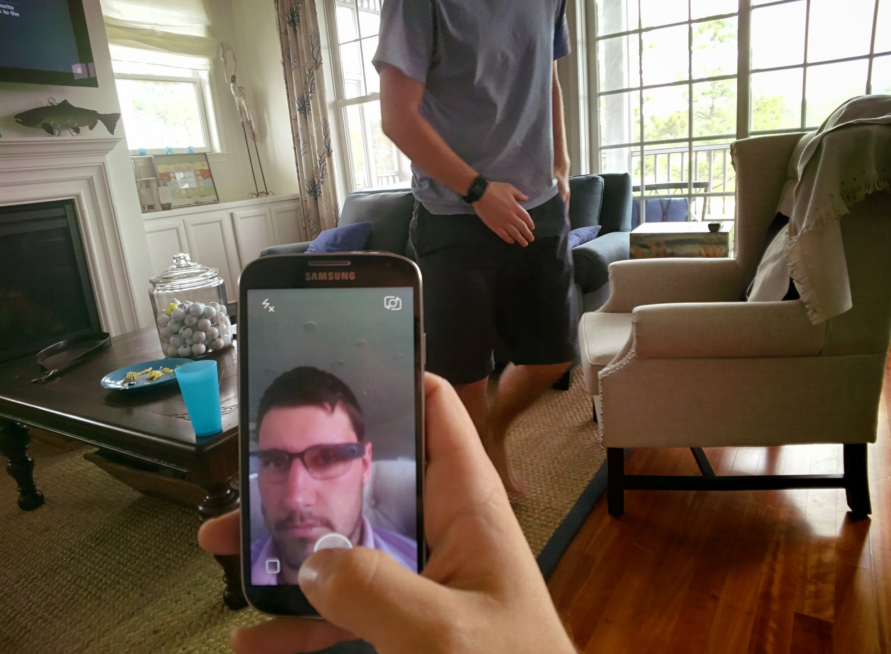
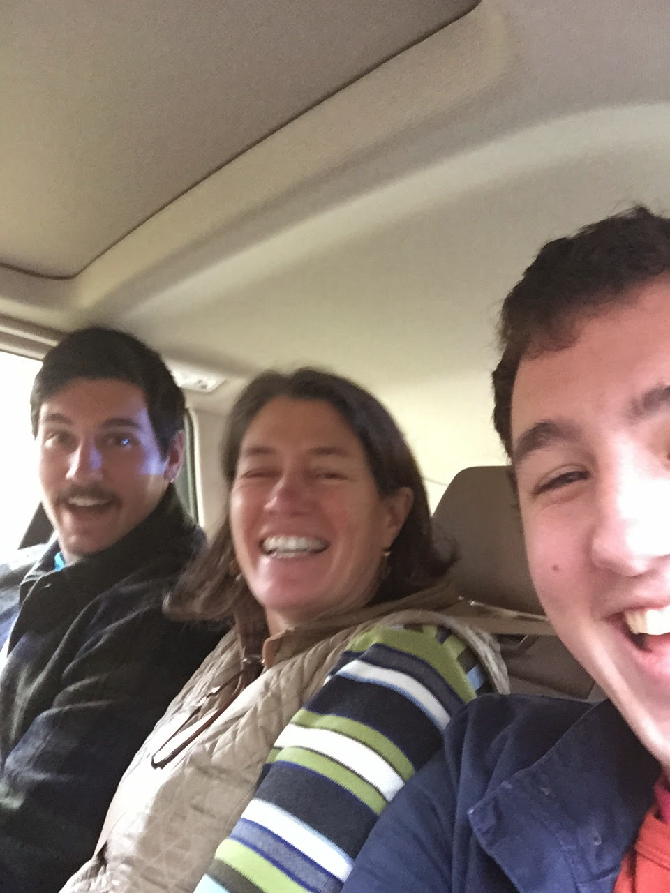
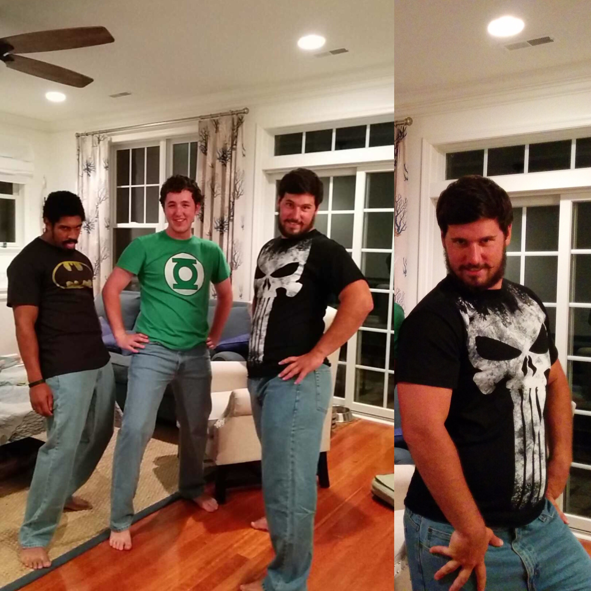
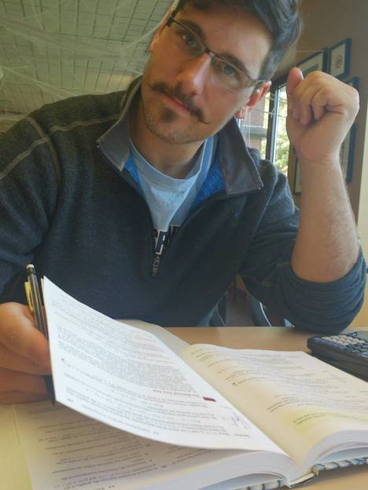
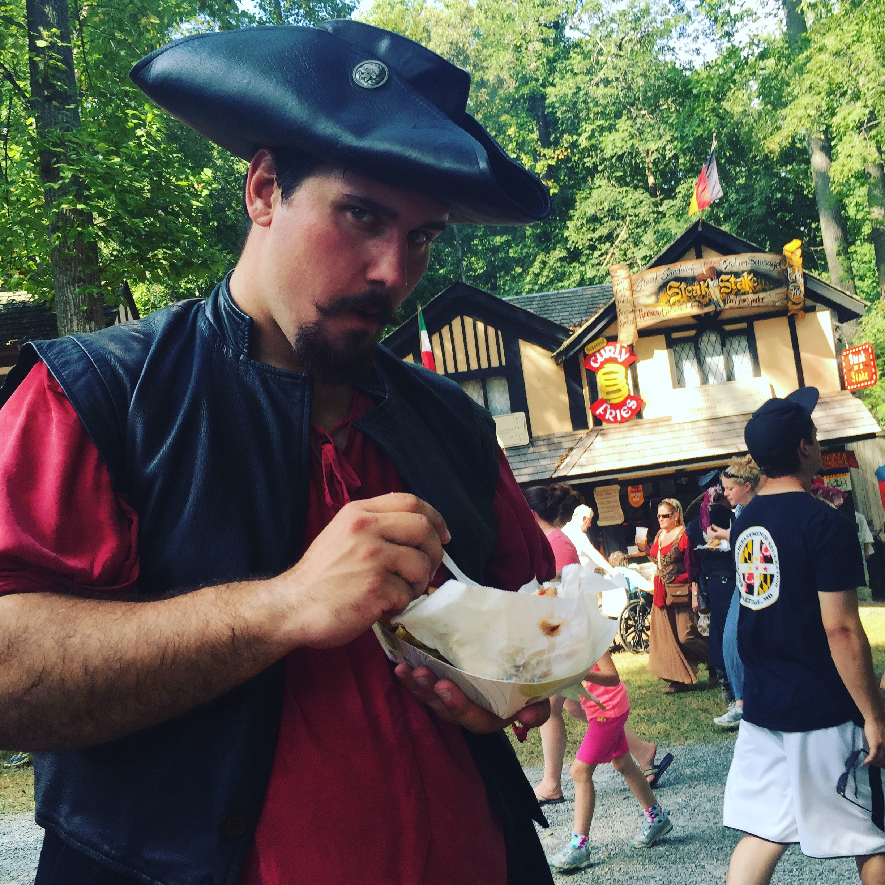

Abstract
Brought to you by the creative genius behind the years most innovative web series "Wikipedia with Lucas", I Moustache You A Question presents an in depth look at the development of what once was referred to by a random stranger in Panera Bread as "Awesome".
Reviews for I Moustache You A Question
"Truly breathtaking" -- The Author
"A story like this comes along once in a millenia, it's truly that bad." -- The Author's Mother
"Can I have the last four minutes of my life back please." -- Some random dude on the street.
"Who's the kid in the first picture in the blue shirt. He's cute" -- Lucas
The Beginning

We went way back into the archives to see if we could trace down the origin story. Look at these two damn stylish lads. We may have gone back too far as it seems we ventured into the era of pre-facial hair and towards the tail end of what is known as the chunky-monkey era. Let's venture a little forward in time to see if we can uncover more clues!
High School

We now venture into the high school years. These years don't offer much up in the explanation of facial hair but they do provide some very important clues. The hair cut!! We now suspect that the poor hair cut's during these years were an early indication of the rebellion that would inspire the eventual moustache!

The semi bangs cut.
The College Years
Here we see the first indications of facial hair. As you can see, the subject has started to grow hair as a result of those cold Wyoming winters. This appears to be the first evidence of dabbling in the facial hair arts. Hopefully, we can start to see progress from here.
Gotcha

Alas it was just a false flag. Here you can see the subject removed the facial hair in favor of the clean shaven look. Look at him brag about his cleanliness.
Further Regression...

The subject seems to have regressed even further. We aren't quite sure the context of this picture but it appears the subject was spot-testing the bearded lady look. The bearded lady look is a prime example of a first start at mastering the facial hair dark arts.
Rebounding...

As we move forward a few years, we see that the subject has adopted the young professional look. This is a nicely trimmed full faced beard. A typical sight when walking around the streets of any normal city.
Please Officer, it was only an experiment

Here we see the subject during a routine traffic stop. The subject is donning what some refer to as a truly horrible 'stache. This is the first real indication of a desire for moustache-ness and an example of trying out the waters. Some say the reason the cop pulled us over was not for the stated reason of "the car not being state inspected" but rather the officer could not stand the such awful facial hair.
The Denim Vigilantes

Here we have the subject during the summer when he joined a Vigilante Super Hero group: The Denim Vigilantes. We patrolled the streets of Rehoboth Beach looking to solve trouble but we may have inadvertantly caused some. (Wink, Wink, Nudge Nudge). There are rumors that a similar picture exists where the trio is wearing jean shorts, but those claims have yet to be verified.
On the Right Path

Ah, the picture above is the first image of facial hair that resembles what we see today. This appears to be the first image depicting this style of moustache. It appears that this was when he set down the trail that led to where he is today.
So Close, but So Wrong
Here we see that he attempted to iterate over the previous incarnation and try the unkempt look. Unfortunately(or fortunately), the unkempt look obscured the moustache's prominence and did not last long.
The 'Stache Goatee

Here we see the subject in his natural habitat as a Pirate. We can see he gave up on the unkempt look and resorted to the second worst facial hair style: the goatee. This style while much better looking was soon replaced with what became the final incarnation.
Glory is Revealed and the End of the Jedi!
Here we have the last good picture of the moustache before the unfortunate straightening incident. Ever a curious person, he asked Eliza, an ancient sith, to straighten it and it just never curled the same again! R.I.P. moustache.
A New Hope

Finally, we have arrived at today's incarnation. With new moustache wax in hand, there is a new hope that it may return and be stronger than ever.
Happy Birthday!!!
So here's to a happy birthday and many better version's of that thing you call art!